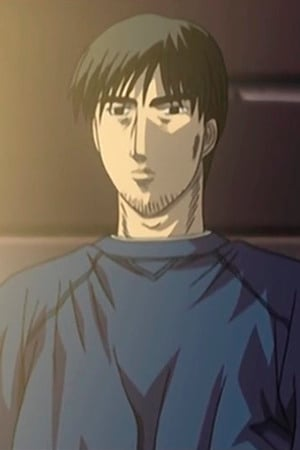
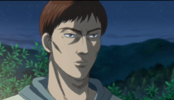

Enna Skyline is the home course of the Todo School, which is a racing school set up by ex-rally driver and owner of a performance shop, Todo. The course itself has a lot of tight corners and grip is very important.
Daiki Ninomiya
Daiki Ninomiya is the downhill driver of the Todo School. He uses a Honda Civic Type R. Before the race, Ryosuke tells Takumi to not look in his rear view mirror and to not use the upper 2000 rpm his 86 has. The first round begins, and Ninomiya chooses to be the chaser. Due to Takumi not using his upper 2000 rpm, Daiki Ninomiya wears out his tires too fast, and there is a second round. This time, Takumi is the chaser and can now use all his rpm to his advantage. Ninomiya loses grip, and Takumi overtakes him.
Smiley Sakai
Smiley Sakai is the uphill driver of the Todo School. He also uses a demo car as Daiki Ninomiya, which is in this case the Honda Integra Type R. Before the race, Smiley tells Keisuke he has fitted a supercharger in his Honda. Sakai chooses to lead, and in the race that follows, he throws Keisuke off guard by using a brake feint, and Keisuke loses boost. Smiley pulls ahead, and Keisuke’s rhythm is further disrupted when speeds up abruptly after the second corner. When Keisuke enters the corner, he realizes that by copying the movements of the Integra, he entered the corner way too fast, and has to intentionally oversteer to lessen his speed to avoid an accident. To compensate for his lost speed, he dives in the next corner without braking. Smiley Sakai notices the gap getting smaller and takes a line that is as much on the inside as possible. Keisuke accidently bumps the Integra, forcing it to change it’s line. The next part of the course is a low gear-section, and with Keisuke having a better line and the Integra losing boost, Smiley Sakai is overtaken and loses the uphill battle of Enna Skyline.